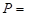
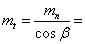
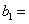
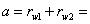
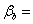
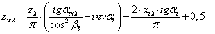

Завршни прорачун зупчаног пара
У
претходном
прорачуну смо одредили модул у равни нормалној на бок зупца, чија стандардна вредност износи:  5
5 
У завршном прорачуну:
- усвајамо радни век (T) зупчаног пара, на основу којег одређујемо број спрезања ( ), те на крају испитујемо да ли су зупци оптерећени статички или динамички и одређујемо чврстоће тј. издржљивости материјала које су меродавне за прорачун,
- рачунамо геометријске мере и кинематске величине зупчаног пара , како бисмо могли да проверимо степен сигурности против лома зубаца зупчаника те димензионишемо остале делове једностепеног редуктора.
Улазни подаци:
Снага на погонском вратилу:  80 
Број обртаја погонског зупчаника:  700 = 11.667
700 = 11.667 
Задани преносни однос:  2
2
Број обртаја гоњеног вратила:  350 = 5.833
350 = 5.833
Режим рада извршног органа са умереним ударима:  1.25
1.25
Усвајам радни век
зупчаника: 10000 
Мали зупчаник је погонски а велики гоњени, за случај редуктора!
На основу вредности броја спрезања у радном веку зупчаника могући су следећи случајеви:
Статички напрегнути зупци:
- граничан статички број циклуса
- статичка чврстоћа је меродавнa за прорачун:
- бокова зубаца која се рачуна:
- подножја зубаца: , даје се у табели Т 4.5
- фактор статичке чврстоће Т 7.187
Динамички напрегнути зупци: Ns">, могућа су два подслучаја:
- - за прорачун је меродавна коначна динамичка издржљивост:
- бокова зубаца која се рачуна:
- подножја зубаца:
- ND"> - за прорачун је меродавна трајна динамичка издржљивост:
- бокова зубаца: , даје се у табели Т 4.5
- подножја зубаца: , даје се у табели Т 4.5
- број циклуса промене напона када је за прорачун меродавна трајна динамичка чврстоћа Т 7.187.
На основу улазних података пројектног задатка добијамо:
420 000 000 обртаја
Из Т 7.187 за површински отврднут челик (Č.1220) усвајамо :
 50 000 000 - за бокове зубаца,
50 000 000 - за бокове зубаца,
3 000 000 - за подножје зубаца,
Закључујемо да је: ND"> - за прорачун је меродавна трајна динамичка издржљивост.
Из Т 4.5 усвајамо: , (као што смо и радили у претходном прорачуну ).
Угао нагиба профила у нормалном пресеку: 20 °
Угао нагиба
бочне линије на
подеоном
кругу:  5 °
5 °
Угао нагиба профила у главном пресеку се рачуна на основу израза: 0.365361;
 0.350293 rad
0.350293 rad
20.07031 °
Број зубаца
погонског зупчаника је задан у улазним подацима пројектног задатка:  25
25
Преносни однос је такође задан: 2
Број зубаца
гоњеног зупчаника:  50 -
усвајам
(заокружује се на ближи цели број): 50
50 -
усвајам
(заокружује се на ближи цели број): 50
Кинематски преносни однос се рачуна: 2
Број зубаца еквивалентног цилиндричног зупчаника са правим зупцима рачунамо по изразу:
25.288
50.575
Модул зупчаника:
5 - у
бочном
пресеку (усвојен у
претходном
прорачуну)
 5.019 - у
главном
пресеку
Ширину
зупчаника рачунамо по изразу:  75.286
75.286
усвајам ширину
гоњеног
зупчаника:  76
76
усвајам ширину
погонског
зупчаника:  80
Померање профила у главном пресеку је различито од нуле по поставци задатка:
Коефицијент померања профила погонског зупчаника:  0.4
0.4
Коефицијент померања профила гоњеног зупчаника:  0.2
0.2
Померање профила у бочном пресеку рачунамо по изразима:
Коефицијент померања профила погонског зупчаника: 0.401528
Коефицијент померања профила гоњеног зупчаника: 0.200764
Пречници подеоних кружница:
погонског зупчаника:  125.477
125.477
гоњеног зупчаника:  250.955
250.955
Пречници основних кружница:
погонског зупчаника: 117.858
полупречник основне кружнице: 58.929
гоњеног зупчаника: 235.715
полупречник основне кружнице: 117.8575
Еволвентни угао на кинематској кружници рачунамо на основу израза:
0.020913 rad
Еволвентни угао на подеоној кружници: 0.0150676 rad
Потребно је одредити угао додирнице на основу израчунатог еволвентног угла.
Поступак се састоји од низа итеративних корака, где усвајамо вредност k из Т 7.164, поново рачунамо приближне вредности угла додирнице, док грешка не буде мања од дозвољене, као што следи:
Из Т 7.164 бирамо вредност: 2.85

Рачунамо прву приближну вредност угла додирнице:
0.3906214 rad
Рачунамо еволвентни угао, поново:
0.021160 rad
Рачунамо разлику између израчунатог и заданог еволвентног угла додирнице и упоређујемо је са дозвољеном разликом:
0.000247 rad
Дозвољена разлика се креће у границама:
усвајам:

Како израчуната разлика није мања од дозвољене (већа је), пробаћемо са првим мањим углом према једначини:
0.3891661 rad
0.0209144 rad
Рачунамо разлику:
1.018E-06 rad <
Како је израчуната разлика мања од усвојене дозвољене разлике, нема потребе да даље да рачунамо.
Дакле
угао додирнице
је:  0.3891661 rad
0.3891661 rad
Да је израчуната прва разлика била мања од дозвољене (тачност је пуно већа од усвојене), ако желимо да задовољимо услов дозвољене разлике пробали бисмо са првим већим углом по једначини:
Пречници кинематских кружница:
погонског зупчаника: 127.382
полупречник кинематске кружнице: 63.691
гоњеног зупчаника: 254.765
полупречник кинематске кружнице: 127.382
Осно растојање зупчаника рачунамо на основу израза:
 191.074
Пречници подножних кружница:
погонског зупчаника: 116.993
гоњеног зупчаника: 240.463
Усвајам вредност коефицијента 0.25, према препорукама за праве зупце!
Пречници темених кружница:
погонског зупчаника: 139.493
усвајам:
140 h8
полупречник темене кружнице: 70
гоњеног зупчаника: 262.963
усвајам:
263 h8
полупречник темене кружнице: 131.5
Подеони кораци:
у бочном пресеку: 15.708
у главном пресеку:  15.768
15.768
Основни корак:
14.810
Активна дужина додирнице :
23.610
24
Степен спрезања профила :
1.594
Степен спрезања бочних линија :
0.422 (претхдони прорачун - фактор )
Укупан степен спрезања::
2.016
Угао нагиба бочне линије зубаца на основном кругу:
0.996641, на основу кога рачунамо:
 0.081991 rad
4.697764 °
Мерни број прекозубаца погонског зупчаника:
3.93
0.455184
4 ( заокружујемо на ближи цели број)
Мера преко 4 зупца погонског зупчаника зноси:
54.805
Мерни број прекозубаца гоњеног зупчаника:
 6.45
0.389483
6 ( заокружујемо на ближи цели број)
Мера преко 6 зубаца гоњеног зупчаника зноси:
85.410